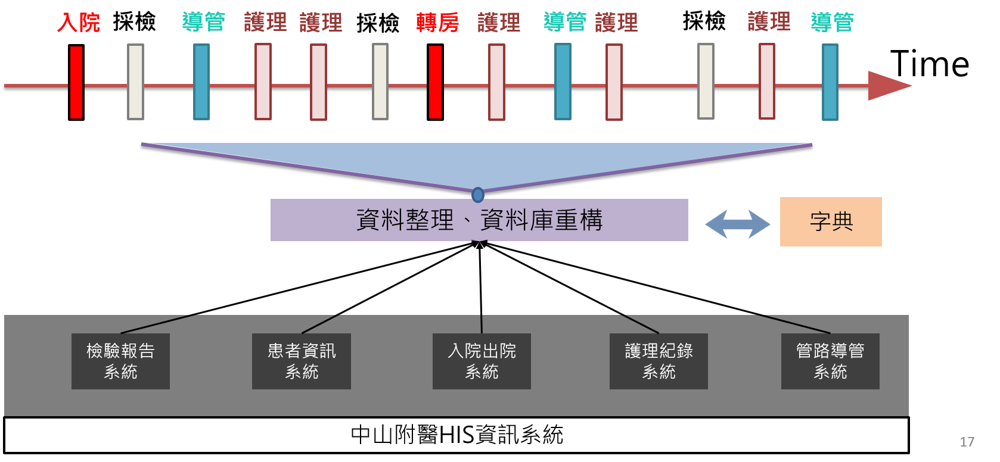
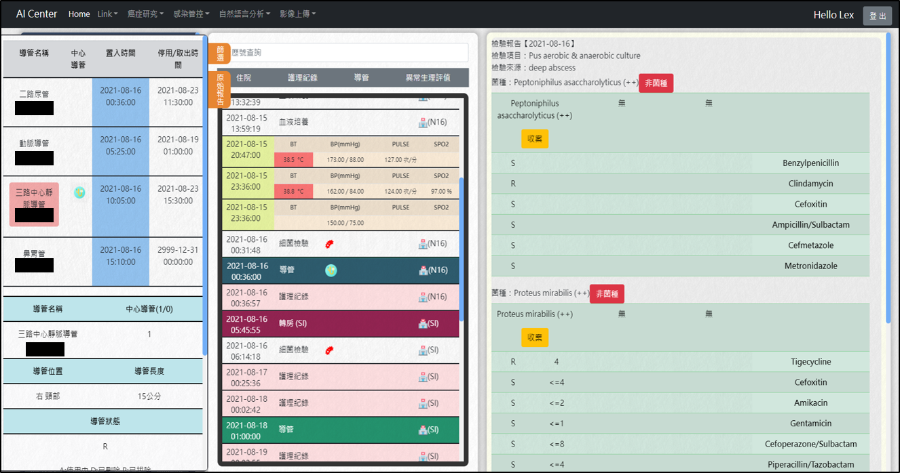
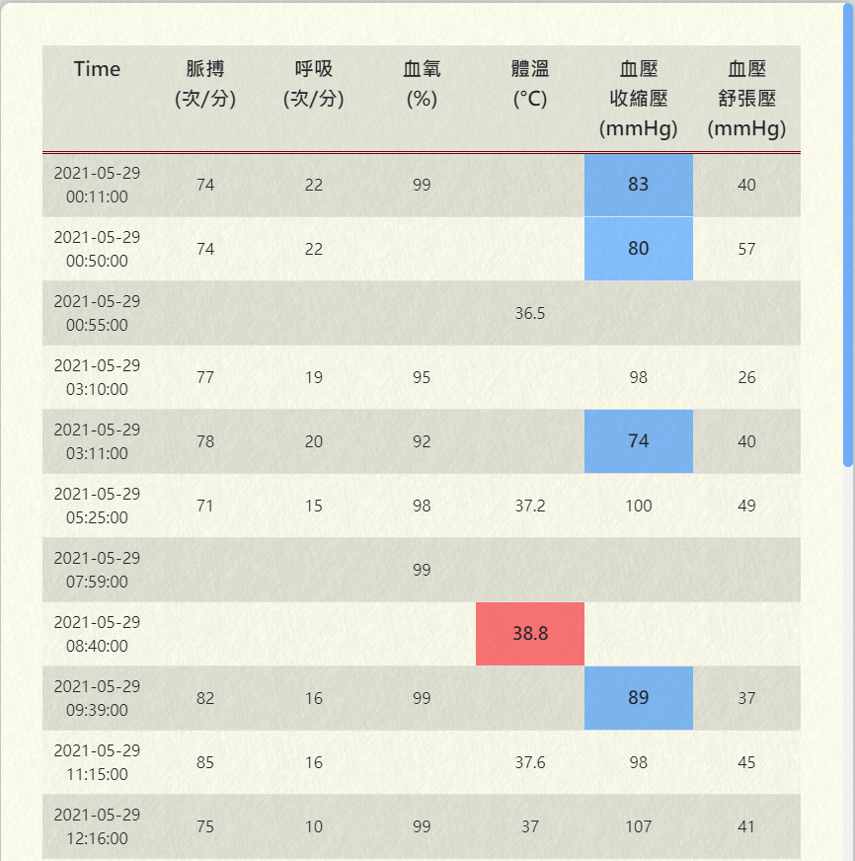
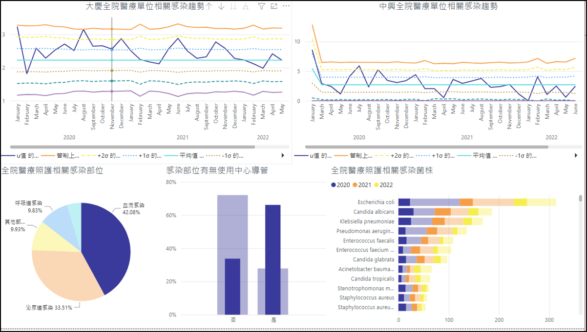

專案分頁
1. 碩論
2. 專題
3. side project
2. 專題：
Artificial Intelligence–Based
Healthcare-Associated Bloodstream Infection
Surveillance and Classification System
時間：2021/9 ~ 2023/2
本專題參加：
ISQua's 39th Poster Display
從
HIS
系統挑選關鍵表格與欄位，與護理人員確認需求，建置專屬感染管控
MSSQL
資料庫，整合複雜資料支援後續分析
應用
n-gram
處理
非結構化文本
，如：
檢驗報告
、
護理紀錄
，並摘錄出關鍵資訊
標準化收案流程以減少
97%
人工複查量
開發內部
Web
系統，供醫師與護理師進行智慧收案
維護後端功能，確保資料串接與系統穩定運行
建立全院感染儀表板，使用
MSSQL
與
Power BI
將統計數據視覺化
圖示（Figures）
HAIDefinitions：依據本書所定義的規則做後續收案

Restructure：將複雜 HIS 資料做整合，作為資料清潔起始的重要部分

CenterWeb：將所有結果整合於單一網站，供護理師/醫師加速收案使用

NursingRecordNER：從文章摘錄患者生理資訊，並加入警示符號與時間導向呈現

Distribution：針對收案結果與摘錄結果，以 Power BI 製作統計圖表
Poster（PDF）
點此下載/開啟 poster2023.pdf
返回主頁